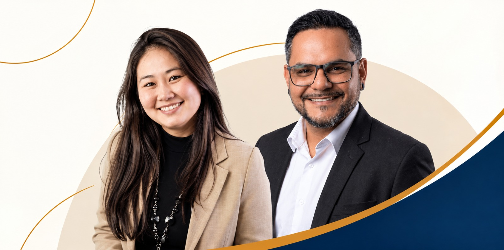

A equipe muda o tempo todo?
A alta rotatividade faz a contratação e a adaptação recomeçarem.
Consultoria de RH para empresas
Estruture seu RH. Contrate com critério.
Prepare suas lideranças.
O PRÓXIMO PASSO DA SUA EMPRESA
Vagas reabertas, conflitos que chegam ao dono e gestores sem preparo para liderar consomem tempo e dificultam a operação.
O primeiro passo é entender o que está por trás desses desafios e definir prioridades.
CONTE COM A PADRINHOS RH
Preencha seus dados. Depois do registro, você continuará o atendimento pelo WhatsApp.
A alta rotatividade faz a contratação e a adaptação recomeçarem.
Conflitos e decisões sobre pessoas sobrecarregam quem precisa conduzir o negócio.
Faltam processos claros para selecionar, integrar e desenvolver profissionais.
Delegar, dar feedback e alinhar expectativas ainda são desafios na rotina.
Ruídos entre pessoas e áreas prejudicam a colaboração e geram retrabalho.
NOSSAS SOLUÇÕES
Quatro frentes de atuação para pequenas e médias empresas que precisam contratar, organizar e desenvolver suas equipes.
Dê clareza à gestão de pessoas da sua empresa.
Para quem: empresas sem RH estruturado ou que precisam reorganizar a área.
Defina quem sua empresa precisa antes de preencher a vaga.
Para quem: empresas que precisam contratar profissionais com mais critério.
Prepare gestores para conduzir pessoas, além de acompanhar tarefas.
Para quem: novos líderes e gestores que precisam fortalecer sua atuação.
Desenvolva comportamentos que fazem diferença no trabalho.
Para quem: equipes que precisam melhorar a interação e a forma de trabalhar juntas.
Não sabe por onde começar?
Veja como construímos cada jornada de desenvolvimento.
COMO DESENVOLVEMOS PESSOAS
Combinamos metodologias conforme o público, as competências e a realidade da organização.
O desafio da equipe orienta
a escolha da metodologia.
Utilizamos e-learning e microlearning para organizar conteúdos digitais, módulos curtos e trilhas de aprendizagem. Flexibilidade para estudar e retomar conceitos ao longo do desenvolvimento.
Situações práticas e simulações permitem experimentar comportamentos, avaliar alternativas e exercitar competências em um ambiente de aprendizagem.
Processos individuais ou em pequenos grupos apoiam a reflexão sobre desafios, o fortalecimento de competências e a construção de planos de ação.
Na abordagem Learning by Teaching, os participantes explicam conceitos, compartilham experiências e ensinam uns aos outros, exercitando a comunicação e aprofundando a compreensão.
Elementos de jogos, desafios e atividades interativas estimulam a participação, conectando cada dinâmica às competências e aos objetivos do treinamento.
Uma abordagem centrada nas pessoas para compreender desafios, explorar possibilidades, construir soluções e testar ideias de forma colaborativa.
Podemos utilizar o modelo como referência para combinar experiências profissionais, aprendizagem com outras pessoas e ações formais de desenvolvimento. A jornada é ajustada ao contexto e aos objetivos da empresa.
Incentivamos o Lifelong Learning por meio da prática, da reflexão e da troca de conhecimentos. Experiência, interação e contexto conectam o aprendizado à evolução profissional.
Qual competência sua equipe precisa desenvolver?
CONHEÇA A PADRINHOS RHPOR QUE PADRINHOS RH
Vivências em RH, Desenvolvimento Humano e Organizacional e Treinamento e Desenvolvimento para compreender os desafios do negócio.
Conhecimentos sobre comportamento humano para apoiar pessoas, lideranças e relações de trabalho.
A realidade da equipe orienta a proposta. Valorizamos transparência e relacionamento próximo durante a atuação.
Conectamos diagnóstico e desenvolvimento às práticas de gestão. Conforme o escopo, indicadores apoiam o acompanhamento.
QUEM SOMOS

PSICOLOGIA ORGANIZACIONAL · DHO
Psicóloga Organizacional e especialista em Desenvolvimento Humano e Organizacional.
Sua trajetória foi construída estruturando áreas de DHO, desenvolvendo lideranças e criando processos que conectam pessoas, cultura e estratégia.
Atua em projetos de desenvolvimento, gestão de desempenho, universidade corporativa, onboarding, jornada do colaborador, Employee Experience e práticas de RH.
Transforma desafios de pessoas em estrutura, desenvolvimento e resultados que funcionam na prática.
LIDERANÇA · APRENDIZAGEM
Especialista em Desenvolvimento de Lideranças e Treinamento.
Sua trajetória passa pela gestão de RH, consultoria e Treinamento e Desenvolvimento, com forte atuação no desenvolvimento de líderes e na construção de experiências de aprendizagem.
É criador do PDM — Programa de Desenvolvimento de Multiplicadores e do LAI — Liderança de Alto Impacto, metodologias autorais voltadas ao desenvolvimento de facilitadores, multiplicadores e líderes.
Transforma conhecimento em desenvolvimento na prática.
PERGUNTAS FREQUENTES
Entenda como nossos serviços de RH podem apoiar sua empresa.
Entrar em contatoUma consultoria de RH ajuda empresas a analisar e organizar a gestão de pessoas. Na Padrinhos RH, o trabalho pode envolver diagnóstico, processos, integração de colaboradores, avaliação de desempenho, clima e indicadores, conforme o escopo contratado.
Sim. Atendemos pequenas e médias empresas que precisam estruturar o RH, contratar profissionais ou desenvolver lideranças e equipes, incluindo negócios em crescimento e organizações sem uma área de RH estruturada.
Sim. A atuação pode apoiar uma necessidade específica, como Recrutamento e Seleção, Desenvolvimento de Lideranças ou Treinamento comportamental. A demanda orienta a definição da proposta.
A Consultoria de RH trabalha a organização e a melhoria da gestão de pessoas. O Recrutamento e Seleção tem foco na contratação de profissionais. Os serviços podem atender demandas separadas ou relacionadas.
O Desenvolvimento de Lideranças é direcionado a quem conduz equipes e precisa fortalecer competências de gestão. O Treinamento comportamental pode envolver diferentes profissionais, com foco em comunicação, colaboração e relacionamento.
A escolha considera o público, o desafio e as competências a desenvolver. Os programas podem combinar aprendizagem online, conteúdos curtos, simulações, coaching, mentoring e atividades colaborativas, conforme os objetivos definidos.
Sim. Temos base em São Paulo e atendimento nacional. O formato de execução é alinhado conforme o serviço e a localização da empresa.
O valor depende do serviço e do escopo da demanda. Entre em contato para apresentar a necessidade da empresa e conversar sobre uma proposta.
Preencha o formulário com seus dados. Após o registro, você será encaminhado ao WhatsApp para continuar a conversa com a Padrinhos RH.